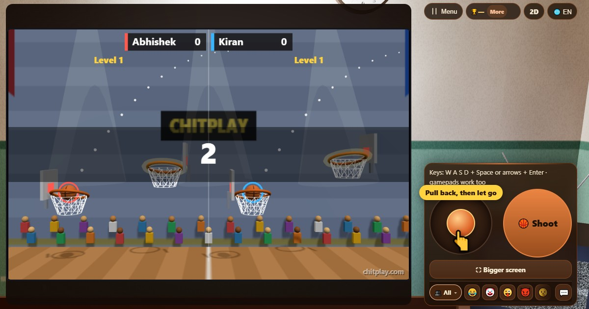

Hoop Flick (Hoop Flick)
- 👥 1–2 jugadores
- Juegos arcade (en la tele, en 3D)
- 🆓
Guía en español
Tira hacia atrás, suelta y mete la pelota en el siguiente aro. Combos de canastas limpias.
English name: Hoop Flick

Cómo se juega
- Arrastra el stick hacia atrás, como un tirachinas: la pelota saldrá hacia el lado contrario. Cuanto más tiras, más fuerte el lanzamiento.
- Suelta el stick para lanzar. Con teclas, usa las flechas izquierda y derecha para apuntar, arriba y abajo para la fuerza, y Espacio para lanzar.
- Haz que la pelota caiga por el siguiente aro desde arriba.
- Cada aro tiene doce segundos: la barra roja avisa cuando se acaba el tiempo.
- Si fallas, la pelota sale de la pista y la partida termina.
- Cada cinco canastas hay un nivel nuevo: aros que se mueven, luego viento, luego las dos cosas.
Puntuación
Una canasta que toca el aro vale 1. Una canasta limpia vale 2, y varias limpias seguidas valen más: hasta 5 puntos cada una. Medallas a los 20, 50, 100 y 200 puntos.
Quién gana
Solo, supera tu mejor marca. Con un amigo, cada uno juega su mitad de la pista y gana la puntuación más alta.
Preguntas frecuentes
¿Se termina?
No. Los aros siguen llegando hasta que fallas.
¿Pueden jugar dos personas?
Sí, en una pantalla, cerca o en línea. Cada jugador tiene su propia mitad de la pista.
Formas de jugar
- Como invitado: Sin registro ni inicio de sesión. Elige un nombre y juega al momento.
- Contra la computadora: Cuando no hay nadie, los jugadores de la computadora ocupan los asientos libres. Fácil, normal o difícil.
- Online: Siéntate en una mesa pública con jugadores de todo el mundo.
- Con amigos cerca: Crea la partida en un teléfono y comparte el código o el QR. Tus amigos se unen desde sus teléfonos.
- En un solo teléfono: Pasad el teléfono por turnos: un solo dispositivo basta para toda la familia.
Otros idiomas
- हिन्दी: हूप फ़्लिक
- Hinglish: Hoop Flick
- Português: Hoop Flick
- Français: Hoop Flick
- Deutsch: Hoop Flick
- Bahasa Indonesia: Hoop Flick
- Türkçe: Hoop Flick
- Italiano: Hoop Flick
- 日本語: フープフリック
- 한국어: 후프 플릭
- 中文: 弹指投篮
- Русский: Бросок в кольцо
- اردو: باسکٹ فلک
- नेपाली: हुप फ्लिक
- বাংলা: হুপ ফ্লিক
- English: Hoop Flick · Reglas completas (inglés)
Todos los juegos


En ChitPlay no hay dinero real, apuestas ni premios. Los puntos no tienen valor.